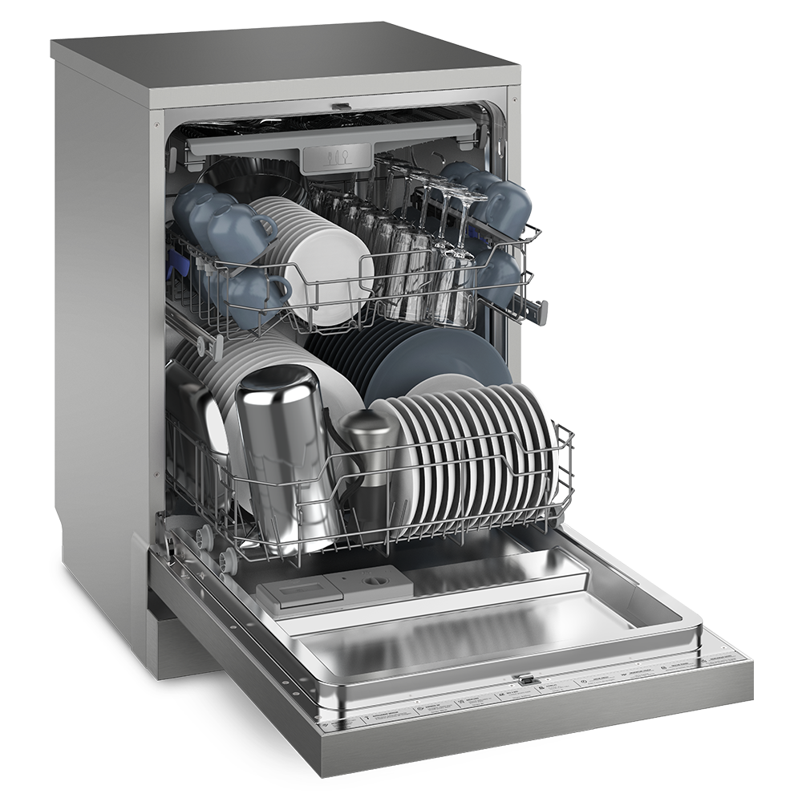

Lava Louças Electrolux 10 Serviços Inox com Função de Higienizar
A Lava-Louças Electrolux (LL10X) é tudo o que você precisa!
- Otimização de tempo - Com a lavagem de louças sendo automatizada, o seu tempo livre aumenta;
- Economia de água - O consumo de água por ciclo é cerca de 90% menor do que a mesma quantidade lavada à mão;
- Louça mais limpa - Sabão concentrado + água quente = limpeza mais eficiente;
- Redução do uso de esponjas e panos - Menos contato com germes e bactérias que costumam se acumular em esponjas.
Top 5 Marcas de Eletrodomésticos no Brasil (2024–2025)
- Electrolux
- LG
- Brastemp
- Consul
- Samsung